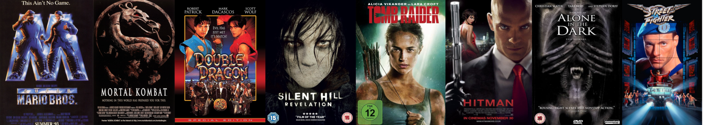
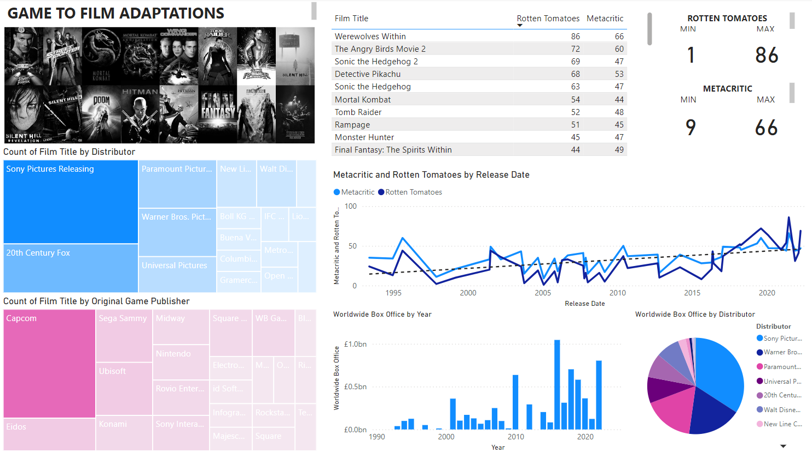

Game to Film: Adaptations Analysis
Analyse the success of films adapted from video games over the years.
Solo Analyst
Overview
This project involved analysing the success of films adapted from video games. The goal was to evaluate both critical and audience reception of these adaptations over time to identify trends and potential improvements in the quality of these films.
Data Collection
The data was sourced from two comprehensive Wikipedia lists: one for live-action films and the other for animated films based on video games. These lists were meticulously compiled into Excel spreadsheets and subsequently imported into Power BI for analysis.
Analytical Approach
The analysis primarily focused on critical reception, using Metacritic scores, and audience reception, using Rotten Tomatoes percentages. The objective was to track the evolution of these metrics over time to determine if the quality and reception of game-to-film adaptations have improved.
Visualisation
Below are screenshots of the main dashboard created in Power BI, with additional screenshots hightlighting key areas.

Key Findings
The analysis revealed a general upward trend in the ratings of video game adaptations. While the data showed fluctuations with numerous peaks and troughs, the overall trendline indicated an improvement in both critical and audience reception over the years. This suggests a gradual enhancement in the quality and acceptance of these adaptations.
Future Projections
Based on the observed trends, it is reasonable to predict that future adaptations of video games into films will likely continue to improve. Additionally, the recent shift towards adapting video games into TV series, has shown interesting results. While some adaptations like "Halo" have struggled, others have achieved significant success and critical acclaim, such as "The Last of Us" and "Fallout,” with these two in particular being excellent examples of staying truly faithful to the source material while creating an accessible experience for new audiences.
Learnings
This project significantly enhanced my proficiency in Power BI. While the data was relatively straightforward, the experience highlighted the importance of working with more complex datasets to fully leverage Power BI's capabilities and to foster innovative problem-solving skills. Future projects involving more intricate data would enable the creation of more insightful and actionable dashboards.
By engaging with this project, I developed a deeper understanding of the nuances in adapting video games to film and television, and the evolving landscape of audience expectations and critical reception.